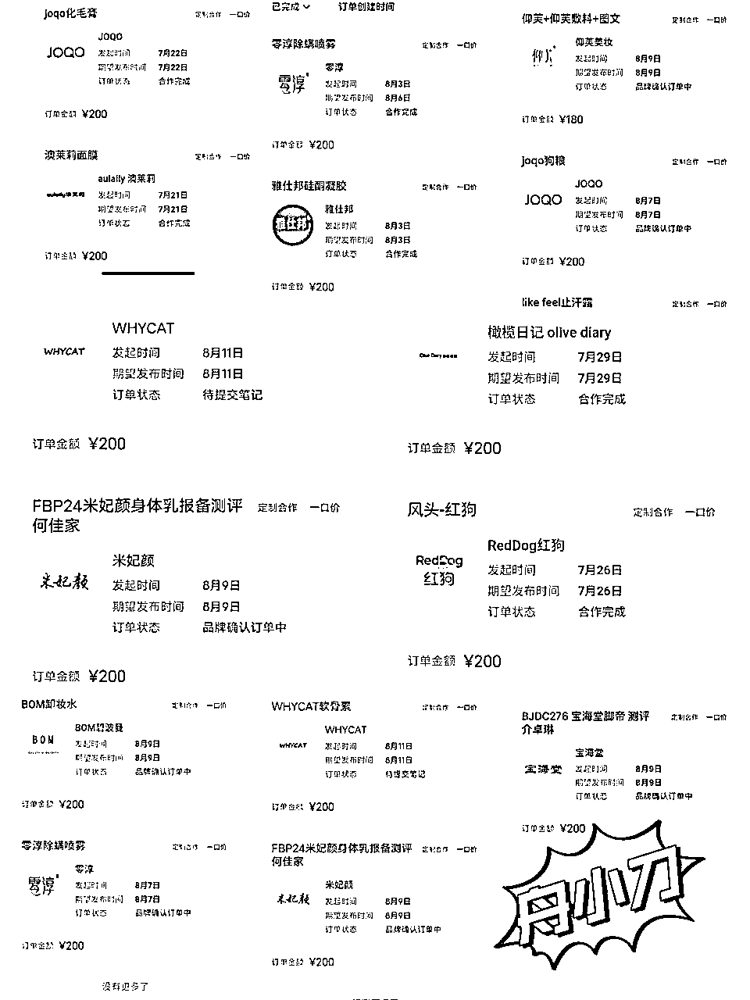
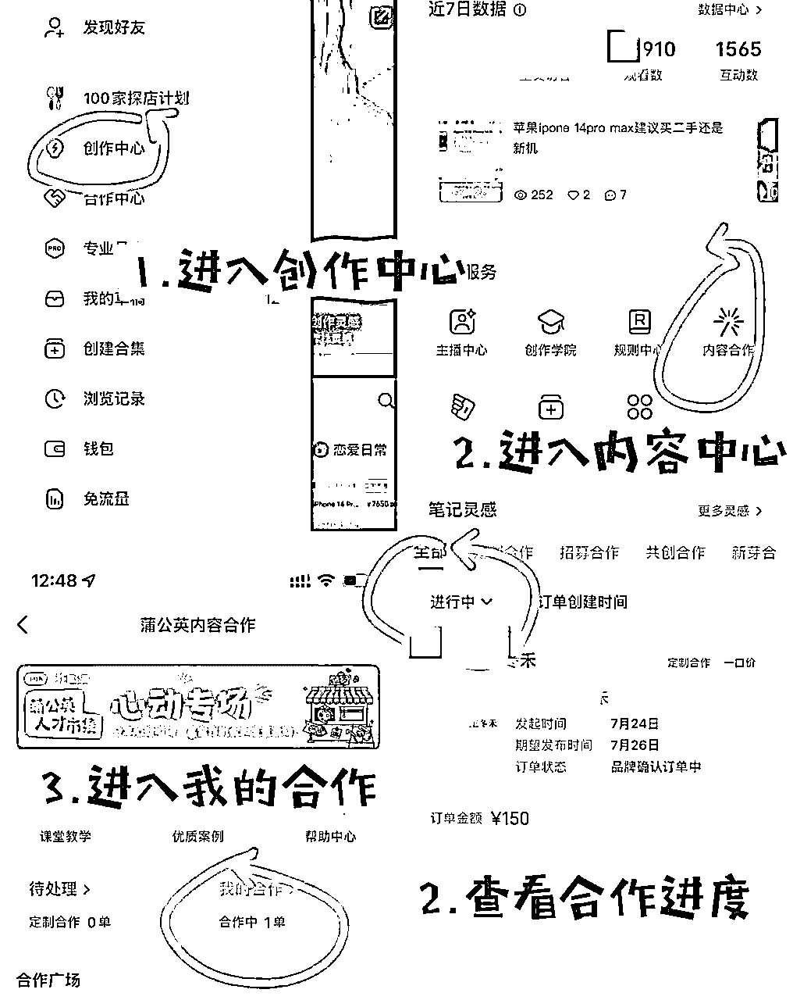
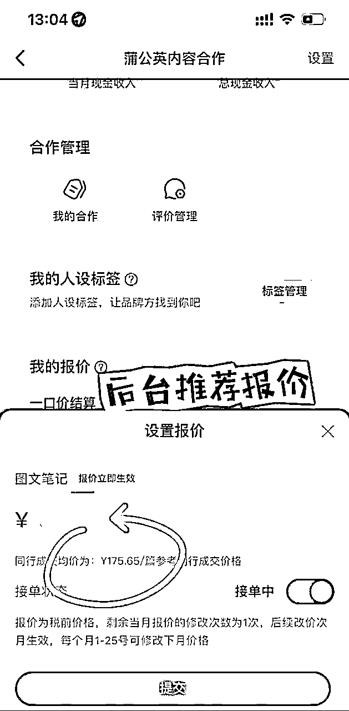
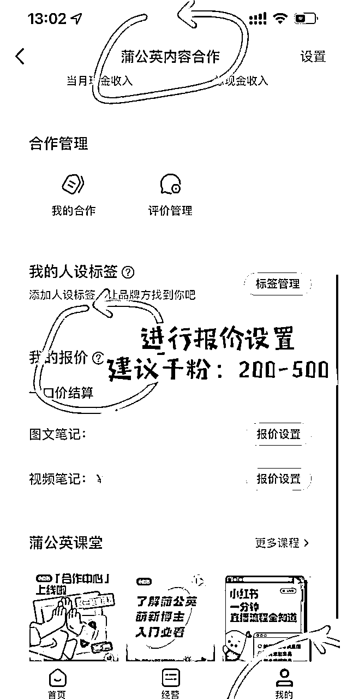
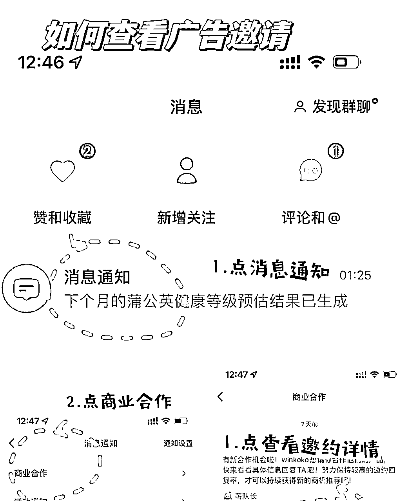
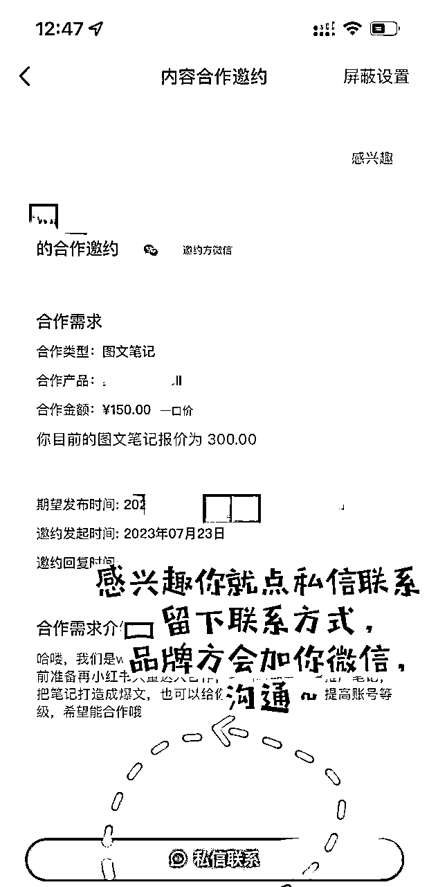
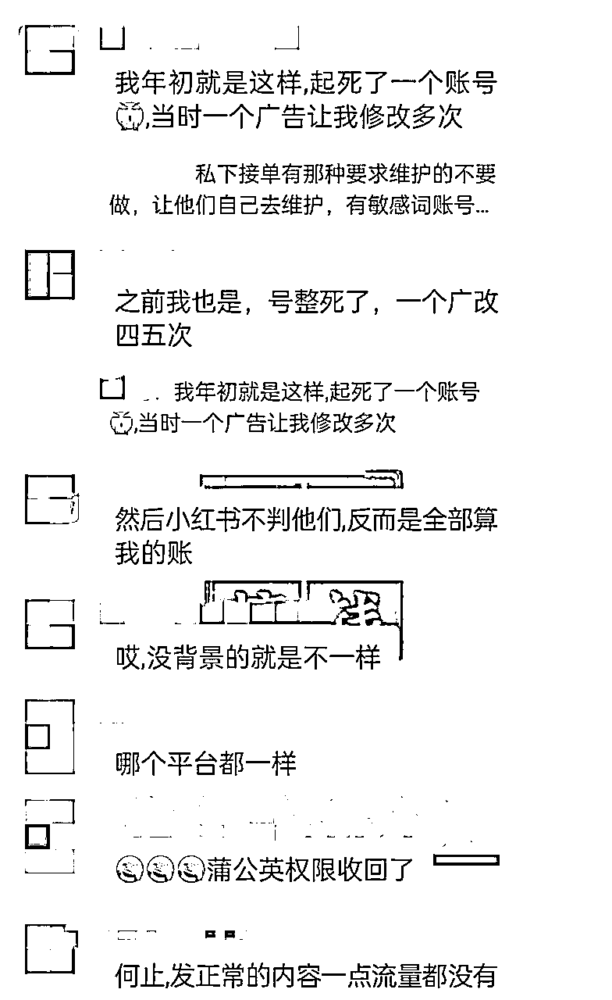
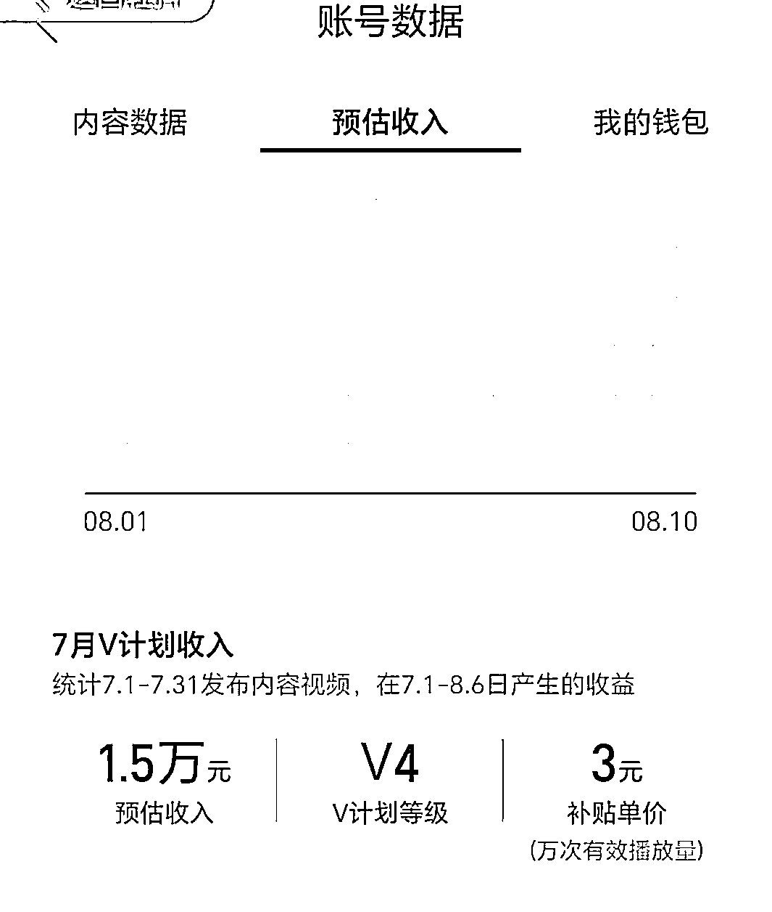

来源：https://kghub8c63q.feishu.cn/docx/Qb3CdgLR6oUz2fxov65c1uB7nJg
群友们好，我是舟小刀，90后龙凤胎宝妈，三个月副业转正，成功转型自由职业。自从上次分享了小红书商单项目 ，小伙伴们的反响还不错，这边再给大家写一份进阶版操作教程。细化到养号、搬运剪辑、千粉开通蒲公英、接广告。
先晒一下，最近跟着我开始实操的学员部分收益，说明不是我一个人能取到成果。

做小红书商单真的非常简单，有手就行。只要坚持每天更新，按照方法操作，破千粉平均7~10天左右，咱就不说有些学员一两天就破千粉了。接下来，跟大家补充一下操作的细节。
1、注册新账号
手机号码就可以注册，一个人可以开通15张手机卡。
2、实名认证
接广告必须实名认证，自己的不够，亲戚的来凑。
3、刷垂直
比如你想做玩泥巴影视混剪，就搜泥巴看剧，找相关的视频观看。刷一个小时，至少养三天，点赞评论收藏。底层逻辑就是模拟真人操作，看小红书登记达到北鼻薯，基本就是养号成功了。
4、尽量用流量，少用WIFI
特别是账号多的情况，一旦判搬运违规，容易连坐。
用剪映就够了，不会去重看教程，手机剪辑也可以。
这有免费的剪映剪辑教程：链接：https://pan.baidu.com/s/12fUg7BHA2aQnayCENt_L1g?pwd=1lyt
搬运什么素材很重要，之前有人竟然问我，别人用过的素材能不能用？别人用过了，你再用那就是同一个平台进行搬运，就容易被判违规。
咱们要找那种博主在其他平台发布了视频，但没有在小红书发过的，那他的作品在小红书就是原创。这种素材除了抖音快手以外，还有qq小世界这些小众平台的视频，都可以搬运，这就是信息差。
关于泥巴看剧的剪辑搬运，可以看我上一篇文章， 在此我也不多加赘述了。





个人接单会比较难，品牌方要求较高，而且有很多广告有敏感词会影响账号。所以，我们都是对接的机构，之前有小伙伴就是自己接的商单，没多久账号就被限流了，甚至收回了蒲公英权限。

品牌方会通过微信联系你以后会把现有的图文笔记发给你，你直接发布图文，把笔记复制粘贴到小红书发布。官方会审核，审核通过直接发布即可。如果审核没通过，找品牌方的编辑，让他修改笔记再发布就行。
注意不要断更，广告还没审核通过，还没正式发布之前你都可以发自己的作品。发布以后要三个小时以后才能发自己的作品。
八月份开始，官方要求小红书要五万粉，才可以把小红书的作品分发到多多赚流量收益。现在的新玩法是直接在多多视频起号，把作品分发到小红书，这样小红书还是能继续赚商单的佣金。
多少V计划还是非常值得去做的，小红书商单只是尝鲜，V计划才是真正的大头。

小红书商单，是我个人做这么多项目以来，觉得难度系数最低，正反馈来的最快的项目。建议感兴趣的小伙伴先行动起来，赚点零花钱找找感觉，再奔向月入过万吧。行动才是最重要的。